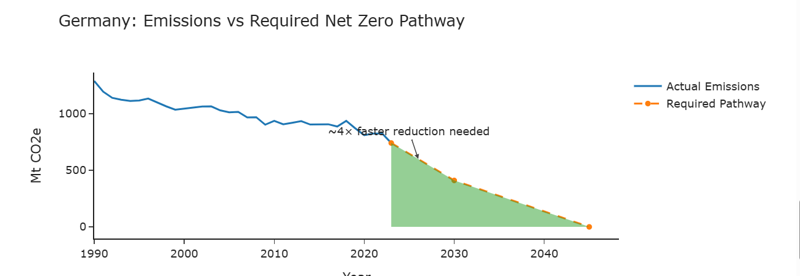
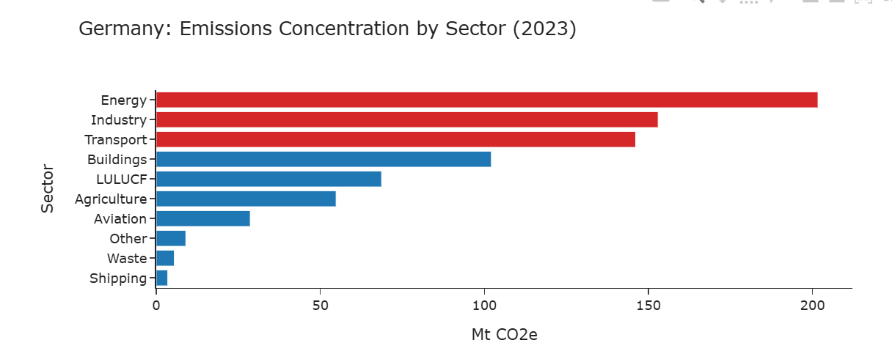

Germany has cut emissions materially since 1990, but the question is no longer whether progress exists. The real issue is whether the current pace is fast enough to meet near-term climate commitments.
Germany targets net zero by 2045 and has already delivered substantial emissions reductions over the past three decades. However, ambition alone is not the issue. The more important question is whether the current pace of decarbonization can support the next phase of the transition.
This analysis compares Germany’s historical emissions trajectory with the reduction pathway implied by its net zero ambition, then links that gap to the sectors driving the majority of current emissions.
Germany’s emissions declined from approximately 1,288 Mt CO2e in 1990 to around 741 Mt CO2e in 2023. This reflects real progress, but the required pace of future cuts is materially steeper than the pace achieved historically.

Germany’s emissions challenge is not evenly spread across the economy. Instead, a limited set of sectors accounts for most of the remaining footprint, which makes prioritization both possible and necessary.

The gap between ambition and execution is structural. Earlier reductions were supported by efficiency gains, energy system shifts, and periodic external shocks, but the remaining emissions are increasingly concentrated in harder-to-abate sectors.
This matters because future reductions will likely require deeper technological change, infrastructure build-out, and higher capital intensity than earlier phases of decarbonization.
Closing the gap will depend less on broad, economy-wide messaging and more on targeted execution in a few high-impact sectors: